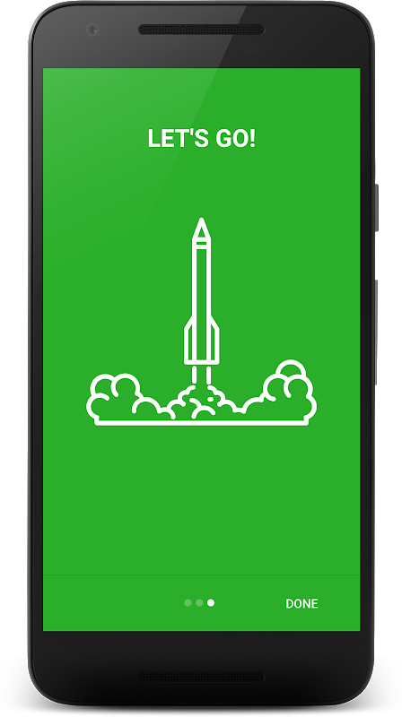
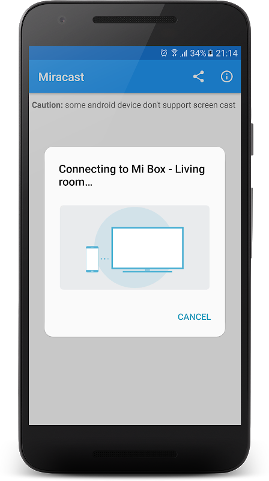

Miracast 到底值不值得用：从 DLNA 到无线显示，一台老用户的选型账
投屏生态里协议多、名字杂，Miracast 常被当成 DLNA 的替代品或手机自带投屏的别名。实际它处在一个独特的位置——既不是最老的也不是最新的，却在实时镜像这件事上恰好卡在了体验与兼容性的甜点区。
投屏这个事儿，说起来简单，背后的协议名字够记一阵：DLNA、Miracast、Google Cast、AirPlay……每个对应一套不同的传输逻辑，选错了要么投不上要么体验打折。我从 Android 4.3 时代就开始折腾，中间换过好几种方案，现在家里两台电视、两块显示器的投屏链路基本固定下来——Miracast 不是最花哨的那一个，却成了我用得最多的底座工具。
投屏生态里它排在什么位置
先把格局理清楚，不然容易混淆。DLNA 是 2000 年代那批老协议的代表，核心思路是"你有文件，我有电视，文件给你你自己播"——手机端只是个遥控器，电视端硬解码能力强的时候体验确实不错，但只能投媒体文件，网页、游戏、App 界面一概无能为力。AirPlay 是苹果生态闭环内的事，不提。Google Cast 走的是类似 DLNA 的"推送"路子，只是协议栈更现代，需要 Chromecast 或内置 Cast 的接收端。
Miracast 2012 年由 Wi-Fi Alliance 推出，思路完全不同：不是推文件，是把整块屏幕实时镜像过去。手机端播什么，电视就是个大号显示器——没有内容类型限制，网页、游戏、文档、相册，全都是屏幕的一部分，通通能上。这个定位决定了它从一开始就和 DLNA/Cast 走的是两条路线，不是替代关系，是互补。
它的另一个优势是系统级原生支持。Android 4.2+ 就内置无线显示开关，Windows 8.1+ 也自带 Miracast 接收器，不需要额外装 App，也不需要插 Chromecast 之类的硬件。虽然系统原生支持，但如果需要单独获取安装包可以从官方下载拿到。这一点让它在"应急投屏"场景下几乎没有对手——朋友来你家想投个照片，你让他打开手机设置搜无线显示就行，不用装任何东西。官方协议的完整规范可以在它的官网上找到。
真正让我留下来的三个点
实时镜像覆盖一切内容类型
这是最核心的差异。有一年帮朋友在电视上演示一个网页版的数据看板，DLNA 和 Cast 都投不上——因为那不是视频文件也不是受支持的 Cast 应用，就是个浏览器页面。Miracast 一键就连上了，整个浏览器窗口实时同步，甚至包括地址栏和滚动操作。

这个场景下 DLNA 根本没存在感，因为它的设计就不处理"屏幕画面"这种东西。你手机上任何一个 App，只要能渲染到屏幕上，Miracast 就能投——这包括游戏画面（虽然延迟因人而异）、正在编辑的文档、系统设置界面，甚至是另一个投屏 App 的界面。对于需要"现场演示"或者"把手机内容给一群人看"的场景，它是唯一不需要额外适配的方案。
接收端不用专用硬件
Google Cast 生态需要 Chromecast 或者内置 Cast 协议的电视，AirPlay 需要 Apple TV 或 AirPlay 2 接收端。Miracast 只需要接收端（电视、显示器、投影仪的无线显示入口）支持 Wi-Fi Direct，而 2015 年之后出厂的几乎所有智能电视都带这个。我那台 2016 年的小米电视、2018 年的 LG OLED、甚至公司会议室里的杂牌投影仪，全部原生支持 Miracast，开机就是待机画面，手机搜一下直接连。
不需要 dongle，不需要插 HDMI，不需要配对码——这些零门槛的体验细节，是它能成为"默认方案"的主要原因。对比之下，Cast 生态虽然投屏时码率更高、延迟更低，但你得先确认接收端支不支持，不支持就得买 Chromecast。
端到端加密，投屏不会被窃听
这点可能很多人没在意。DLNA 和 Cast 的投屏链路在默认配置下是明文或弱加密的，同一 Wi-Fi 下理论上可以被抓包看到你投的内容。Miracast 走 Wi-Fi Direct 点对点链路，连接建立时自动协商 WPA2 加密，不经路由器中转——你的手机和电视直接建立一条加密通道，投屏过程对网络里其他设备不可见。
这对在家投个视频无所谓，但如果是在办公室投屏演示敏感文档，或者临时在朋友家投私人相册，这个差异就很重要。我之前在公司会议室给客户投屏过一份产品报价单，就是靠 Miracast 的点对点链路避免了被同网段的其他设备蹭看的风险。
代价：这些限制你得提前知道
说它好不是没条件的。Miracast 为了保持协议通用性和系统原生性，在几个地方做了妥协——有些是设计上的取舍，有些是生态现状的局限。
流媒体 DRM 黑屏是硬伤。投 Netflix、Disney+、国内部分平台时，画面会变黑但声音照常。这不是 bug，是内容保护机制在工作——播放器检测到屏幕镜像等于一次潜在录屏，主动切断视频层。目前没有合规的绕过方式，合规的替代路径只有两条：要么用 App 自带的 Cast/投屏按钮（电视直拉流，画质还更好），要么电视端直接装平台官方应用。这点在平台方和协议方之间是死结，短期内不会有变化。

延迟是实时镜像的固有代价。Wi-Fi Direct 点对点传输本身有编码缓冲，加上接收端的解码延迟，体感大概在 80-150ms 之间。看视频完全没问题（电影的帧率本身就是 24/30fps，延迟被运动画面掩盖了），用来打游戏就够了——画面比操作慢半拍，动作竞技类完全没法玩。如果追求低延迟投屏打游戏，得走有线 HDMI 或者专用游戏投屏方案，Miracast 不合适。
平台碎片化的尾部问题。虽然 Android 4.2+ 和 Windows 8.1+ 都原生支持 Miracast，但不同厂商对协议栈的实现细节不完全一致。我遇到过的情况包括：某款老款华为平板连电视需要手动重启电视的投屏服务才能协商成功；部分 Windows 笔记本作为接收端时，音频协商出了"只有视频没有音频"的组合；极个别老电视只能接受 720p 而不是 1080p。这些都是协议覆盖不到的厂商实现细节，排查起来也不难（重进待机页、清应用数据、换一端验证），但确实存在。遇到具体设备的兼容边界可以翻miracast文档，里面有不少实机排查的案例。
选购结论：什么样的人该用它
如果你是这些场景的用户，Miracast 大概率是你的最优解：
- 家里电视不算新但带无线显示的——不用买 Chromecast 就能获得完整镜像体验，省了硬件成本；
- 经常需要投非媒体内容的——网页演示、App 界面、系统设置，DLNA 和 Cast 覆盖不到的部分它全包；
- 注重隐私的——点对点加密链路比路由器中转的明文协议更安全；
- 多设备多场景切换频繁的——系统原生支持意味着手机、平板、笔记本全都能一键连同一台电视，不用每个设备装不同的 App。
反过来说，这些场景你应该考虑别的方案：
- 主要用流媒体 App 看电视的——直接在电视上装官方应用体验最好，或者用 App 内置的 Cast 投屏比 Miracast 画质更高；
- 追求低延迟玩投屏游戏的——延迟太高，走 HDMI 或专用游戏投屏；
- 苹果生态用户——AirPlay 配合 Apple TV 的体验更流畅，生态闭环内就够用；
- 投大量本地视频/音乐/幻灯片的——DLNA 让电视自己播、手机解放，长时间稳定性比 Miracast 镜像更好。
最后补一句：这个分类下其他工具我不是没试过，DLNA 太老了、Cast 太依赖厂商支持、有线 HDMI 太麻烦。Miracast 在"无需硬件 + 全覆盖镜像 + 原生支持"这三个维度上的平衡，目前还没有哪个方案能完全替代它。如果你还在犹豫投屏协议选哪个，先把你家电视的无线显示开关打开，手机搜一下试试看——十秒钟就能验证能不能连上，不行再换别的。整套资料分别同步在 GitHub、Gitee 和 GitCode，国内访问选 Gitee 或 GitCode 更顺手。